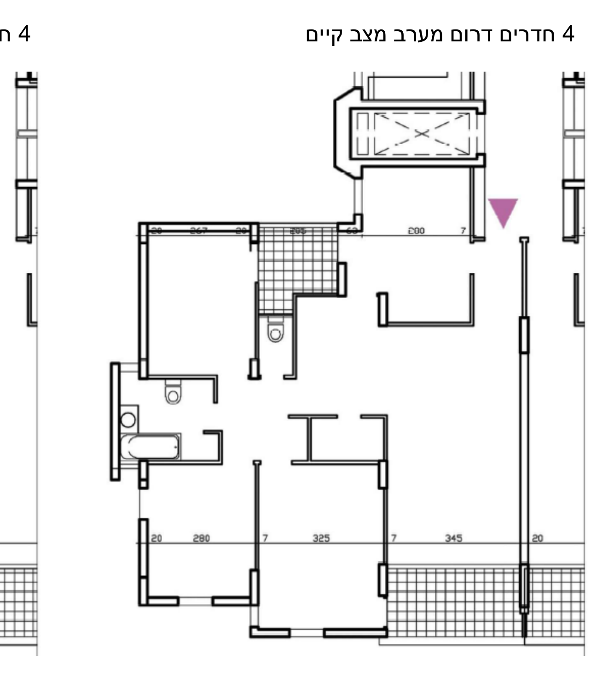
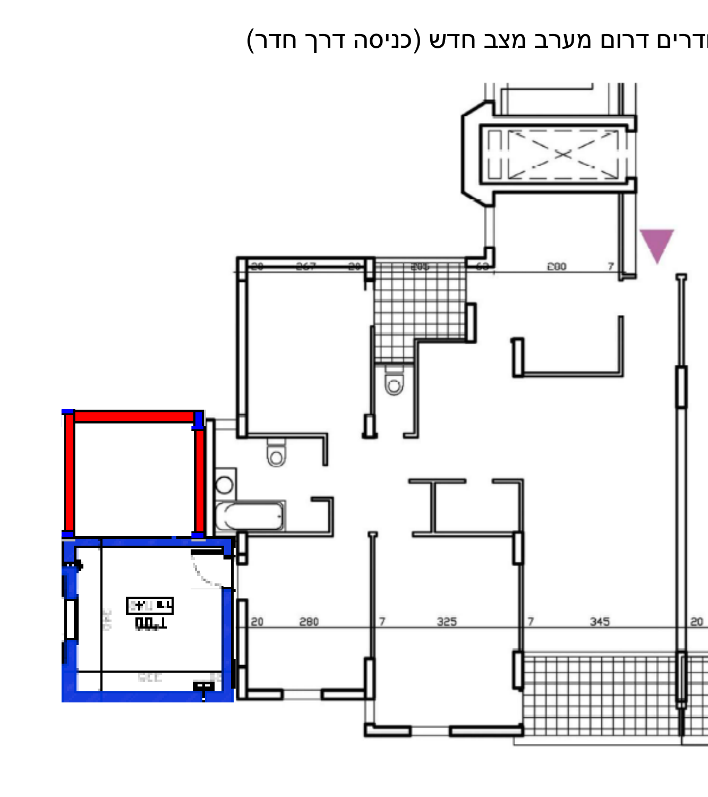
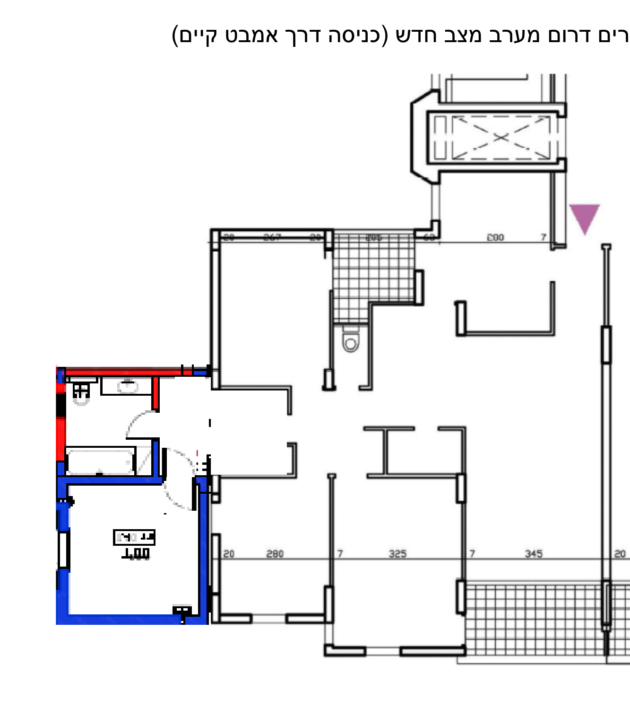

מצב קיים: דירת 4 חדרים רחוקה מהכביש

הצעה 3: דירת 4 חדרים רחוקה מהכביש
זוהי הצעה לממ"ד בלבד, מתוך מטרה לחסוך בעלויות ובבלגן
בהצעה הבאה הממ"ד משורטט בכחול.
כל דירת 4 חדרים יכולה לבחור מהיכן תהיה הכניסה לממ"ד.
באופציה הימנית הכניסה לממד תהיה דרך דלת המרפסת הקטנה
דלת הממד יכולה להיות דלת הזזה.
באופציה השמאלית הורסים את חדר האמבטיה הנוכחי ובונים אותו מחדש בשטח האדום.
כך שהכניסה לממ"ד היא ממסדרון ולא דרך חדר אחר.
יתרונות:
גמישות לפי דירה,
האופציה הימנית הכי זולה,
באופציה הימנית אין צורך בשינוי פנימי בדירה,
באופציה השמאלית יש שנוי, אבל הוא לא מאוד גדול
חסרונות:
באופציה הימנית יש מעטפת (לא מורגשת אני חושב),
אין יותר מרפסת קטנה

